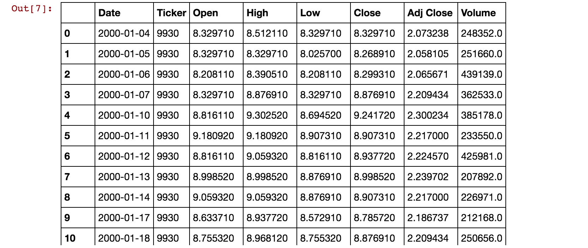
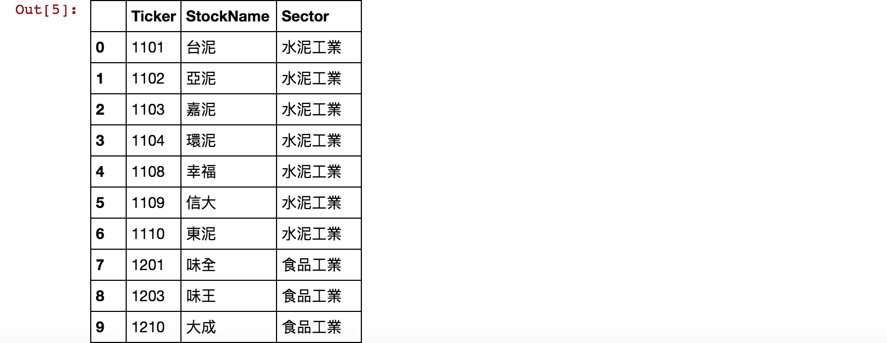

<!DOCTYPE html>
<html>
<head><meta name="generator" content="Hexo 3.9.0">
    <meta charset="utf-8">

    

    
    <title>[Python 股票爬蟲]十分鐘學會Python爬台股(From Yahoo Finance API) | 量化研究院-煉金致富</title>
    
    <meta name="viewport" content="width=device-width, initial-scale=1, maximum-scale=1">
    
        <meta name="keywords" content="爬蟲,Python,股票">
    
    <meta name="description" content="一、Python爬蟲如果你已經對Python了解了，十分鐘就可以照著本篇的說明學會如何撈出台灣股票從2000到現在的所有股價。但如果你從沒接觸過Python，建議從以下清單從頭學習。 預備知識: Python環境安裝 Python 語法 Dataframe Python 簡單爬蟲  基本爬蟲步驟:網路爬蟲基本的步驟如下:   Step 1: 觀察網頁特性 Step 2: 用Get/Post將網頁">
<meta name="keywords" content="爬蟲,Python,股票">
<meta property="og:type" content="article">
<meta property="og:title" content="[Python 股票爬蟲]十分鐘學會Python爬台股(From Yahoo Finance API)">
<meta property="og:url" content="http://ushluap.github.io/2019-06-26-crawler-1/index.html">
<meta property="og:site_name" content="量化研究院-煉金致富">
<meta property="og:description" content="一、Python爬蟲如果你已經對Python了解了，十分鐘就可以照著本篇的說明學會如何撈出台灣股票從2000到現在的所有股價。但如果你從沒接觸過Python，建議從以下清單從頭學習。 預備知識: Python環境安裝 Python 語法 Dataframe Python 簡單爬蟲  基本爬蟲步驟:網路爬蟲基本的步驟如下:   Step 1: 觀察網頁特性 Step 2: 用Get/Post將網頁">
<meta property="og:locale" content="zh-TW">
<meta property="og:image" content="http://ushluap.github.io/2019-06-26-crawler-1/Python-Crawler.png">
<meta property="og:updated_time" content="2019-06-26T17:00:07.000Z">
<meta name="twitter:card" content="summary">
<meta name="twitter:title" content="[Python 股票爬蟲]十分鐘學會Python爬台股(From Yahoo Finance API)">
<meta name="twitter:description" content="一、Python爬蟲如果你已經對Python了解了，十分鐘就可以照著本篇的說明學會如何撈出台灣股票從2000到現在的所有股價。但如果你從沒接觸過Python，建議從以下清單從頭學習。 預備知識: Python環境安裝 Python 語法 Dataframe Python 簡單爬蟲  基本爬蟲步驟:網路爬蟲基本的步驟如下:   Step 1: 觀察網頁特性 Step 2: 用Get/Post將網頁">
<meta name="twitter:image" content="http://ushluap.github.io/2019-06-26-crawler-1/Python-Crawler.png">
    

    

    
        <link rel="icon" href="/favicon.ico">
    

    <link rel="stylesheet" href="/libs/font-awesome/css/font-awesome.min.css">
    <link rel="stylesheet" href="/libs/titillium-web/styles.css">
    <link rel="stylesheet" href="/libs/source-code-pro/styles.css">

    <link rel="stylesheet" href="/css/style.css">

    <script src="/libs/jquery/3.3.1/jquery.min.js"></script>
    
    
        <link rel="stylesheet" href="/libs/lightgallery/css/lightgallery.min.css">
    
    
        <link rel="stylesheet" href="/libs/justified-gallery/justifiedGallery.min.css">
    
    
        <script type="text/javascript">
(function(i,s,o,g,r,a,m) {i['GoogleAnalyticsObject']=r;i[r]=i[r]||function() {
(i[r].q=i[r].q||[]).push(arguments)},i[r].l=1*new Date();a=s.createElement(o),
m=s.getElementsByTagName(o)[0];a.async=1;a.src=g;m.parentNode.insertBefore(a,m)
})(window,document,'script','//www.google-analytics.com/analytics.js','ga');

ga('create', 'UA-142748505-1', 'auto');
ga('send', 'pageview');

</script>

    
    


</head>
</html>
<body>
    <div id="wrap">
        <header id="header">
    <div id="header-outer" class="outer">
        <div class="container">
            <div class="container-inner">
                <div id="header-title">
                    <h1 class="logo-wrap">
                        <a href="/" class="logo"></a>
                    </h1>
                    
                </div>
                <div id="header-inner" class="nav-container">
                    <a id="main-nav-toggle" class="nav-icon fa fa-bars"></a>
                    <div class="nav-container-inner">
                        <ul id="main-nav">
                            
                                <li class="main-nav-list-item" >
                                    <a class="main-nav-list-link" href="/">首頁</a>
                                </li>
                            
                                <li class="main-nav-list-item" >
                                    <a class="main-nav-list-link" href="/categories/quant">量化交易</a>
                                </li>
                            
                                <li class="main-nav-list-item" >
                                    <a class="main-nav-list-link" href="/categories/finance">金融</a>
                                </li>
                            
                                <li class="main-nav-list-item" >
                                    <a class="main-nav-list-link" href="/categories/math">數學</a>
                                </li>
                            
                                <li class="main-nav-list-item" >
                                    <a class="main-nav-list-link" href="/categories/algo">程式</a>
                                </li>
                            
                                <li class="main-nav-list-item" >
                                    <a class="main-nav-list-link" href="/categories/ai">AI/ML/DL</a>
                                </li>
                            
                        </ul>
                        <nav id="sub-nav">
                            <div id="search-form-wrap">

    <form class="search-form">
        <input type="text" class="ins-search-input search-form-input" placeholder="搜尋" />
        <button type="submit" class="search-form-submit"></button>
    </form>
    <div class="ins-search">
    <div class="ins-search-mask"></div>
    <div class="ins-search-container">
        <div class="ins-input-wrapper">
            <input type="text" class="ins-search-input" placeholder="輸入關鍵字..." />
            <span class="ins-close ins-selectable"><i class="fa fa-times-circle"></i></span>
        </div>
        <div class="ins-section-wrapper">
            <div class="ins-section-container"></div>
        </div>
    </div>
</div>
<script>
(function (window) {
    var INSIGHT_CONFIG = {
        TRANSLATION: {
            POSTS: '文章',
            PAGES: '頁面',
            CATEGORIES: '分類',
            TAGS: '標籤',
            UNTITLED: '(未命名)',
        },
        ROOT_URL: '/',
        CONTENT_URL: '/content.json',
    };
    window.INSIGHT_CONFIG = INSIGHT_CONFIG;
})(window);
</script>
<script src="/js/insight.js"></script>

</div>
                        </nav>
                    </div>
                </div>
            </div>
        </div>
    </div>
</header>
        <div class="container">
            <div class="main-body container-inner">
                <div class="main-body-inner">
                    <section id="main">
                        <div class="main-body-header">
    <h1 class="header">
    
    <a class="page-title-link" href="/categories/quant/">quant</a>
    </h1>
</div>

                        <div class="main-body-content">
                            <article id="post-crawler-1" class="article article-single article-type-post" itemscope itemprop="blogPost">
    <div class="article-inner">
        
            <header class="article-header">
                
    
        <h1 class="article-title" itemprop="name">
        [Python 股票爬蟲]十分鐘學會Python爬台股(From Yahoo Finance API)
        </h1>
    

            </header>
        
        
            <div class="article-meta">
                
    <div class="article-date">
        <a href="/2019-06-26-crawler-1/" class="article-date">
            <time datetime="2019-06-26T11:54:03.000Z" itemprop="datePublished">2019-06-26</time>
        </a>
    </div>

		

                
    <div class="article-tag">
        <i class="fa fa-tag"></i>
        <a class="tag-link" href="/tags/Python/">Python</a>, <a class="tag-link" href="/tags/爬蟲/">爬蟲</a>, <a class="tag-link" href="/tags/股票/">股票</a>
    </div>

            </div>
        
        
        <div class="article-entry" itemprop="articleBody">
            <p></p>
<h2 id="一、Python爬蟲"><a href="#一、Python爬蟲" class="headerlink" title="一、Python爬蟲"></a>一、Python爬蟲</h2><p>如果你已經對Python了解了，十分鐘就可以照著本篇的說明學會如何撈出台灣股票從2000到現在的所有股價。<br>但如果你從沒接觸過Python，建議從以下清單從頭學習。</p>
<h3 id="預備知識"><a href="#預備知識" class="headerlink" title="預備知識:"></a>預備知識:</h3><ul>
<li><a href="https://www.finlab.tw/Python%E8%82%A1%E7%A5%A8%E6%8A%95%E8%B3%87/" target="_blank" rel="noopener">Python環境安裝</a></li>
<li><a href="http://www.runoob.com/python/python-basic-syntax.html" target="_blank" rel="noopener">Python 語法</a></li>
<li><a href="https://ithelp.ithome.com.tw/articles/10185922" target="_blank" rel="noopener">Dataframe</a></li>
<li><a href="https://www.youtube.com/watch?v=ceUhb2-gYOU" target="_blank" rel="noopener">Python 簡單爬蟲</a></li>
</ul>
<h3 id="基本爬蟲步驟"><a href="#基本爬蟲步驟" class="headerlink" title="基本爬蟲步驟:"></a>基本爬蟲步驟:</h3><p>網路爬蟲基本的步驟如下: </p>
<ul>
<li>Step 1: 觀察網頁特性</li>
<li>Step 2: 用Get/Post將網頁資訊撈下來</li>
<li>Step 3: Data Clean/Data Mining</li>
<li>Step 4: 將Data存進Database裡</li>
</ul>
<p>概念就是把網路上的data轉化成工程師可以處理的data，接下來我會照著步驟解釋詳細的流程。<br>(但基本上，就算不懂這些，直接拉到最下面，把code copy過去就可以動了。)</p>
<h3 id="學習難度-★"><a href="#學習難度-★" class="headerlink" title="學習難度: ★"></a>學習難度: ★</h3><h2 id="二、Python-爬台灣個股詳細步驟"><a href="#二、Python-爬台灣個股詳細步驟" class="headerlink" title="二、Python 爬台灣個股詳細步驟"></a>二、Python 爬台灣個股詳細步驟</h2><h3 id="Step-1-觀察網頁特性"><a href="#Step-1-觀察網頁特性" class="headerlink" title="Step 1: 觀察網頁特性"></a>Step 1: 觀察網頁特性</h3><p>我們今天要爬的是一個Yahoo Finance API:<br><a href="https://query1.finance.yahoo.com/v7/finance/download/2330.TW?period1=0&amp;period2=1549258857&amp;interval=1d&amp;events=history&amp;crumb=hP2rOschxO0" target="_blank" rel="noopener">https://query1.finance.yahoo.com/v7/finance/download/2330.TW?period1=0&amp;period2=1549258857&amp;interval=1d&amp;events=history&amp;crumb=hP2rOschxO0</a></p>
<p>根據觀察，我們可以看到兩個重點:<br>(1) 2330.TW 代表著台積電的股票代碼。<br>(2) period1 &amp; period2 代表起始日和結束日的timestamp</p>
<h3 id="Step-2-用Get-Post將網頁資訊撈下來"><a href="#Step-2-用Get-Post將網頁資訊撈下來" class="headerlink" title="Step 2: 用Get/Post將網頁資訊撈下來"></a>Step 2: 用Get/Post將網頁資訊撈下來</h3><p>觀察完，接下來要把網址撈下來，我們會用 Python 的<requests>套件來做</requests></p>
<p>(1) 把requests import 進來</p>
<figure class="highlight python"><table><tr><td class="gutter"><pre><span class="line">1</span><br></pre></td><td class="code"><pre><span class="line"><span class="keyword">import</span> requests</span><br></pre></td></tr></table></figure>

<p>(2) 用Post來抓Data</p>
<figure class="highlight python"><table><tr><td class="gutter"><pre><span class="line">1</span><br><span class="line">2</span><br></pre></td><td class="code"><pre><span class="line">site = <span class="string">"https://query1.finance.yahoo.com/v7/finance/download/2330.TW?period1=0&amp;period2=1549258857&amp;interval=1d&amp;events=history&amp;crumb=hP2rOschxO0"</span></span><br><span class="line">response = requests.post(site)</span><br></pre></td></tr></table></figure>

<p>(3) 將抓出來的文字(CSV)直接寫進Dataframe裡，這裡會用到StringIO &amp; Pandas 套件</p>
<figure class="highlight python"><table><tr><td class="gutter"><pre><span class="line">1</span><br><span class="line">2</span><br><span class="line">3</span><br><span class="line">4</span><br></pre></td><td class="code"><pre><span class="line"><span class="keyword">from</span> io <span class="keyword">import</span> StringIO</span><br><span class="line"><span class="keyword">import</span> pandas <span class="keyword">as</span> pd</span><br><span class="line">df = pd.read_csv(StringIO(response.text))</span><br><span class="line">df</span><br></pre></td></tr></table></figure>

<p></p>
<h3 id="Step-3-Data-Clean-Data-Mining"><a href="#Step-3-Data-Clean-Data-Mining" class="headerlink" title="Step 3: Data Clean/Data Mining"></a>Step 3: Data Clean/Data Mining</h3><p>這個data很乾淨，不用什麼處理</p>
<h3 id="Step-4-將Data存進Database裡"><a href="#Step-4-將Data存進Database裡" class="headerlink" title="Step 4: 將Data存進Database裡"></a>Step 4: 將Data存進Database裡</h3><p>因為資料量很小的關係，我決定將它寫入 pickle 就好</p>
<figure class="highlight python"><table><tr><td class="gutter"><pre><span class="line">1</span><br><span class="line">2</span><br><span class="line">3</span><br></pre></td><td class="code"><pre><span class="line"><span class="keyword">import</span> pickle</span><br><span class="line"><span class="keyword">with</span> open(<span class="string">'stock.pkl'</span>,<span class="string">'wb'</span>) <span class="keyword">as</span> f:</span><br><span class="line">    pickle.dump(df,f)</span><br></pre></td></tr></table></figure>

<h2 id="三、Python-爬台灣個股詳細步驟"><a href="#三、Python-爬台灣個股詳細步驟" class="headerlink" title="三、Python 爬台灣個股詳細步驟"></a>三、Python 爬台灣個股詳細步驟</h2><p>了解上面步驟後，接下來就可以學習怎麼把全台灣的股票抓下來。</p>
<h3 id="Step-1-Import-所有的套件"><a href="#Step-1-Import-所有的套件" class="headerlink" title="Step 1: Import 所有的套件"></a>Step 1: Import 所有的套件</h3><figure class="highlight python"><table><tr><td class="gutter"><pre><span class="line">1</span><br><span class="line">2</span><br><span class="line">3</span><br><span class="line">4</span><br><span class="line">5</span><br></pre></td><td class="code"><pre><span class="line"><span class="keyword">import</span> time</span><br><span class="line"><span class="keyword">from</span> io <span class="keyword">import</span> StringIO</span><br><span class="line"><span class="keyword">import</span> requests</span><br><span class="line"><span class="keyword">import</span> pandas <span class="keyword">as</span> pd</span><br><span class="line"><span class="keyword">import</span> pickle</span><br></pre></td></tr></table></figure>

<h3 id="Step-2-用time套件處理timestamp"><a href="#Step-2-用time套件處理timestamp" class="headerlink" title="Step 2: 用time套件處理timestamp"></a>Step 2: 用time套件處理timestamp</h3><figure class="highlight python"><table><tr><td class="gutter"><pre><span class="line">1</span><br><span class="line">2</span><br><span class="line">3</span><br><span class="line">4</span><br><span class="line">5</span><br><span class="line">6</span><br><span class="line">7</span><br></pre></td><td class="code"><pre><span class="line"><span class="function"><span class="keyword">def</span> <span class="title">create_today_timestamp</span><span class="params">()</span>:</span></span><br><span class="line">    today = time.strftime(<span class="string">"%Y-%m-%d"</span>,time.gmtime())</span><br><span class="line">    <span class="keyword">return</span> int(time.mktime(time.strptime(today, <span class="string">"%Y-%m-%d"</span>)))</span><br><span class="line"><span class="function"><span class="keyword">def</span> <span class="title">create_timestamp_from_today</span><span class="params">(n)</span>:</span></span><br><span class="line">    today = create_today_timestamp()</span><br><span class="line">    <span class="keyword">return</span> today + n*<span class="number">24</span>*<span class="number">3600</span></span><br><span class="line">tomorrow_timestamp = create_timestamp_from_today(<span class="number">1</span>)</span><br></pre></td></tr></table></figure>

<h3 id="Step3-抓全台灣的股票清單"><a href="#Step3-抓全台灣的股票清單" class="headerlink" title="Step3: 抓全台灣的股票清單"></a>Step3: 抓全台灣的股票清單</h3><figure class="highlight python"><table><tr><td class="gutter"><pre><span class="line">1</span><br><span class="line">2</span><br><span class="line">3</span><br><span class="line">4</span><br><span class="line">5</span><br><span class="line">6</span><br><span class="line">7</span><br><span class="line">8</span><br><span class="line">9</span><br><span class="line">10</span><br><span class="line">11</span><br><span class="line">12</span><br><span class="line">13</span><br><span class="line">14</span><br></pre></td><td class="code"><pre><span class="line"><span class="function"><span class="keyword">def</span> <span class="title">create_tw_stock_info_list</span><span class="params">()</span>:</span></span><br><span class="line">    res = requests.get(<span class="string">"http://isin.twse.com.tw/isin/C_public.jsp?strMode=2"</span>)</span><br><span class="line">    df = pd.read_html(res.text)[<span class="number">0</span>]</span><br><span class="line">    df.columns = df.iloc[<span class="number">0</span>]</span><br><span class="line">    df = df.iloc[<span class="number">1</span>:]</span><br><span class="line">    df = df.dropna(thresh=<span class="number">3</span>, axis=<span class="number">0</span>).dropna(thresh=<span class="number">3</span>, axis=<span class="number">1</span>)</span><br><span class="line">    df = df.dropna(how=<span class="string">'any'</span>)</span><br><span class="line">    df = df.reset_index(drop=<span class="literal">True</span>)</span><br><span class="line">    new_df = df[<span class="string">'有價證券代號及名稱'</span>].str.replace(<span class="string">u'\u3000'</span>,<span class="string">' '</span>).str.split(<span class="string">u' '</span>,expand=<span class="literal">True</span>)</span><br><span class="line">    new_df.columns = [<span class="string">'Ticker'</span>, <span class="string">'StockName'</span>]</span><br><span class="line">    new_df[<span class="string">'Sector'</span>] = df[<span class="string">'產業別'</span>]</span><br><span class="line">    <span class="keyword">return</span> new_df</span><br><span class="line">tw_stock_info_df = create_tw_stock_info_list()</span><br><span class="line">tw_stock_info_df</span><br></pre></td></tr></table></figure>

<p></p>
<h3 id="Step4-For迴圈把所有股票抓下來"><a href="#Step4-For迴圈把所有股票抓下來" class="headerlink" title="Step4: For迴圈把所有股票抓下來"></a>Step4: For迴圈把所有股票抓下來</h3><figure class="highlight python"><table><tr><td class="gutter"><pre><span class="line">1</span><br><span class="line">2</span><br><span class="line">3</span><br><span class="line">4</span><br><span class="line">5</span><br><span class="line">6</span><br><span class="line">7</span><br><span class="line">8</span><br><span class="line">9</span><br><span class="line">10</span><br><span class="line">11</span><br><span class="line">12</span><br><span class="line">13</span><br><span class="line">14</span><br><span class="line">15</span><br><span class="line">16</span><br></pre></td><td class="code"><pre><span class="line">stock_df = pd.DataFrame()</span><br><span class="line"><span class="comment">#ticker_list = tw_stock_info_df['Ticker']</span></span><br><span class="line">ticker_list = tw_stock_info_df[<span class="string">'Ticker'</span>].tail(<span class="number">30</span>)</span><br><span class="line"><span class="keyword">for</span> ticker <span class="keyword">in</span> ticker_list:</span><br><span class="line">    print(<span class="string">'## Info: Download Ticker '</span>+ticker+<span class="string">'!'</span>)</span><br><span class="line">    site = <span class="string">"https://query1.finance.yahoo.com/v7/finance/download/"</span>+ticker+<span class="string">".TW?period1=0&amp;period2="</span>+str(tomorrow_timestamp)+<span class="string">"&amp;interval=1d&amp;events=history&amp;crumb=hP2rOschxO0"</span></span><br><span class="line">    <span class="keyword">try</span>:</span><br><span class="line">        response = requests.post(site)</span><br><span class="line">        tmp_df = pd.read_csv(StringIO(response.text))</span><br><span class="line">        tmp_df[<span class="string">'Ticker'</span>] = ticker</span><br><span class="line">        stock_df = pd.concat([stock_df,tmp_df],axis=<span class="number">0</span>)</span><br><span class="line">        </span><br><span class="line">    <span class="keyword">except</span>:</span><br><span class="line">        print(<span class="string">'## Warning: Ticker '</span>+ticker+<span class="string">' is failed!'</span>)</span><br><span class="line">stock_df = stock_df.reset_index(drop=<span class="literal">True</span>)</span><br><span class="line">stock_df = stock_df[[<span class="string">'Date'</span>,<span class="string">'Ticker'</span>,<span class="string">'Open'</span>,<span class="string">'High'</span>,<span class="string">'Low'</span>,<span class="string">'Close'</span>,<span class="string">'Adj Close'</span>,<span class="string">'Volume'</span>]]</span><br></pre></td></tr></table></figure>

<p></p>
<h2 id="總結"><a href="#總結" class="headerlink" title="總結"></a>總結</h2><p>雖然很多人都寫過相關的主題，但是還是自己實作一次，當作學習紀錄。<br>希望對大家有所幫助。</p>
<h2 id="Reference"><a href="#Reference" class="headerlink" title="Reference"></a>Reference</h2><ul>
<li><a href="https://www.finlab.tw/%E7%94%A8%E7%88%AC%E8%9F%B2%E7%88%AC%E5%85%A8%E4%B8%96%E7%95%8C%E8%82%A1%E5%83%B9/" target="_blank" rel="noopener">Python新手教學(1)用爬蟲爬全球股價!</a></li>
<li><a href="https://www.finlab.tw/Python%EF%BC%9A%E5%A6%82%E4%BD%95%E7%8D%B2%E5%BE%97%E4%B8%8A%E5%B8%82%E4%B8%8A%E6%AB%83%E8%82%A1%E7%A5%A8%E6%B8%85%E5%96%AE/" target="_blank" rel="noopener">Python：如何獲得上市上櫃股票清單</a></li>
<li><a href="https://medium.com/renee0918/python-%E7%88%AC%E8%9F%B2-%E6%AF%8F%E6%97%A5%E5%A4%A7%E7%9B%A4%E7%B5%B1%E8%A8%88%E8%B3%87%E8%A8%8A-41a70567e2b5" target="_blank" rel="noopener">python爬蟲 — 個股每日統計資訊</a></li>
</ul>

        </div>
        <footer class="article-footer">
            


    <a data-url="http://ushluap.github.io/2019-06-26-crawler-1/" data-id="cjxdirnva0000e8200da8xv8u" class="article-share-link"><i class="fa fa-share"></i>分享到</a>
<script>
    (function ($) {
        $('body').on('click', function() {
            $('.article-share-box.on').removeClass('on');
        }).on('click', '.article-share-link', function(e) {
            e.stopPropagation();

            var $this = $(this),
                url = $this.attr('data-url'),
                encodedUrl = encodeURIComponent(url),
                id = 'article-share-box-' + $this.attr('data-id'),
                offset = $this.offset(),
                box;

            if ($('#' + id).length) {
                box = $('#' + id);

                if (box.hasClass('on')){
                    box.removeClass('on');
                    return;
                }
            } else {
                var html = [
                    '<div id="' + id + '" class="article-share-box">',
                        '<input class="article-share-input" value="' + url + '">',
                        '<div class="article-share-links">',
                            '<a href="https://twitter.com/intent/tweet?url=' + encodedUrl + '" class="article-share-twitter" target="_blank" title="Twitter"></a>',
                            '<a href="https://www.facebook.com/sharer.php?u=' + encodedUrl + '" class="article-share-facebook" target="_blank" title="Facebook"></a>',
                            '<a href="http://pinterest.com/pin/create/button/?url=' + encodedUrl + '" class="article-share-pinterest" target="_blank" title="Pinterest"></a>',
                            '<a href="https://plus.google.com/share?url=' + encodedUrl + '" class="article-share-google" target="_blank" title="Google+"></a>',
                        '</div>',
                    '</div>'
                ].join('');

              box = $(html);

              $('body').append(box);
            }

            $('.article-share-box.on').hide();

            box.css({
                top: offset.top + 25,
                left: offset.left
            }).addClass('on');

        }).on('click', '.article-share-box', function (e) {
            e.stopPropagation();
        }).on('click', '.article-share-box-input', function () {
            $(this).select();
        }).on('click', '.article-share-box-link', function (e) {
            e.preventDefault();
            e.stopPropagation();

            window.open(this.href, 'article-share-box-window-' + Date.now(), 'width=500,height=450');
        });
    })(jQuery);
</script>

        </footer>
    </div>
    <script type="application/ld+json">
    {
        "@context": "https://schema.org",
        "@type": "BlogPosting",
        "author": {
            "@type": "Person",
            "name": "BC Hsu"
        },
        "headline": "[Python 股票爬蟲]十分鐘學會Python爬台股(From Yahoo Finance API)",
        "image": "http://ushluap.github.ioPython-Crawler.png",
        "keywords": "爬蟲 Python 股票",
        "genre": "quant",
        "datePublished": "2019-06-26",
        "dateCreated": "2019-06-26",
        "dateModified": "2019-06-27",
        "url": "http://ushluap.github.io/2019-06-26-crawler-1/",
        "description": "
一、Python爬蟲如果你已經對Python了解了，十分鐘就可以照著本篇的說明學會如何撈出台灣股票從2000到現在的所有股價。但如果你從沒接觸過Python，建議從以下清單從頭學習。
預備知識:
Python環境安裝
Python 語法
Dataframe
Python 簡單爬蟲

基本爬蟲步驟:網路爬蟲基本的步驟如下: 

Step 1: 觀察網頁特性
Step 2: 用Get/Post將網頁"
        "wordCount": 618
    }
</script>

</article>

    <section id="comments">
    
        
    <div id="disqus_thread">
        <noscript>Please enable JavaScript to view the <a href="//disqus.com/?ref_noscript">comments powered by Disqus.</a></noscript>
    </div>

    
    </section>


                        </div>
                    </section>
                    <aside id="sidebar">
    <a class="sidebar-toggle" title="Expand Sidebar"><i class="toggle icon"></i></a>
    <div class="sidebar-top">
        <p>追蹤 :</p>
        <ul class="social-links">
            
                
                <li>
                    <a class="social-tooltip" title="github" href="https://github.com/ushluap" target="_blank" rel="noopener">
                        <i class="icon fa fa-github"></i>
                    </a>
                </li>
                
            
        </ul>
    </div>
    
        
    
    <div class="widgets-container">
        
            
                

            
                
    <div class="widget-wrap">
        <h3 class="widget-title">最新文章</h3>
        <div class="widget">
            <ul id="recent-post" class="">
                
                    <li>
                        
                        <div class="item-thumbnail">
                            <a href="/2019-06-26-crawler-1/" class="thumbnail">
    
    
        <span style="background-image:url(/2019-06-26-crawler-1/Python-Crawler.png)" alt="[Python 股票爬蟲]十分鐘學會Python爬台股(From Yahoo Finance API)" class="thumbnail-image"></span>
    
    
</a>

                        </div>
                        
                        <div class="item-inner">
                            <p class="item-category"><a class="article-category-link" href="/categories/quant/">quant</a></p>
                            <p class="item-title"><a href="/2019-06-26-crawler-1/" class="title">[Python 股票爬蟲]十分鐘學會Python爬台股(From Yahoo Finance API)</a></p>
                            <p class="item-date"><time datetime="2019-06-26T11:54:03.000Z" itemprop="datePublished">2019-06-26</time></p>
                        </div>
                    </li>
                
            </ul>
        </div>
    </div>

            
                
    <div class="widget-wrap widget-list">
        <h3 class="widget-title">分類</h3>
        <div class="widget">
            <ul class="category-list"><li class="category-list-item"><a class="category-list-link" href="/categories/quant/">quant</a><span class="category-list-count">1</span></li></ul>
        </div>
    </div>


            
                
    <div class="widget-wrap widget-list">
        <h3 class="widget-title">所有文章</h3>
        <div class="widget">
            <ul class="archive-list"><li class="archive-list-item"><a class="archive-list-link" href="/archives/2019/06/">六月 2019</a><span class="archive-list-count">1</span></li></ul>
        </div>
    </div>


            
                
    <div class="widget-wrap widget-list">
        <h3 class="widget-title">標籤</h3>
        <div class="widget">
            <ul class="tag-list"><li class="tag-list-item"><a class="tag-list-link" href="/tags/Python/">Python</a><span class="tag-list-count">1</span></li><li class="tag-list-item"><a class="tag-list-link" href="/tags/爬蟲/">爬蟲</a><span class="tag-list-count">1</span></li><li class="tag-list-item"><a class="tag-list-link" href="/tags/股票/">股票</a><span class="tag-list-count">1</span></li></ul>
        </div>
    </div>


            
                
    <div class="widget-wrap widget-float">
        <h3 class="widget-title">標籤雲</h3>
        <div class="widget tagcloud">
            <a href="/tags/Python/" style="font-size: 10px;">Python</a> <a href="/tags/爬蟲/" style="font-size: 10px;">爬蟲</a> <a href="/tags/股票/" style="font-size: 10px;">股票</a>
        </div>
    </div>


            
                
    <div class="widget-wrap widget-list">
        <h3 class="widget-title">連結</h3>
        <div class="widget">
            <ul>
                
                    <li>
                        <a href="http://hexo.io">Hexo</a>
                    </li>
                
            </ul>
        </div>
    </div>


            
        
    </div>
</aside>

                </div>
            </div>
        </div>
        <footer id="footer">
    <div class="container">
        <div class="container-inner">
            <a id="back-to-top" href="javascript:;"><i class="icon fa fa-angle-up"></i></a>
            <div class="credit">
                <h1 class="logo-wrap">
                    <a href="/" class="logo"></a>
                </h1>
                <p>&copy; 2019 BC Hsu</p>
                <p>Powered by <a href="//hexo.io/" target="_blank">Hexo</a>. Theme by <a href="//github.com/ppoffice" target="_blank">PPOffice</a></p>
            </div>
            <div class="footer-plugins">
              
    


            </div>
        </div>
    </div>
</footer>

        
    
    <script>
    var disqus_shortname = 'ushluap';
    
    
    var disqus_url = 'http://ushluap.github.io/2019-06-26-crawler-1/';
    
    (function() {
    var dsq = document.createElement('script');
    dsq.type = 'text/javascript';
    dsq.async = true;
    dsq.src = '//' + disqus_shortname + '.disqus.com/embed.js';
    (document.getElementsByTagName('head')[0] || document.getElementsByTagName('body')[0]).appendChild(dsq);
    })();
    </script>


    
        <script src="/libs/lightgallery/js/lightgallery.min.js"></script>
        <script src="/libs/lightgallery/js/lg-thumbnail.min.js"></script>
        <script src="/libs/lightgallery/js/lg-pager.min.js"></script>
        <script src="/libs/lightgallery/js/lg-autoplay.min.js"></script>
        <script src="/libs/lightgallery/js/lg-fullscreen.min.js"></script>
        <script src="/libs/lightgallery/js/lg-zoom.min.js"></script>
        <script src="/libs/lightgallery/js/lg-hash.min.js"></script>
        <script src="/libs/lightgallery/js/lg-share.min.js"></script>
        <script src="/libs/lightgallery/js/lg-video.min.js"></script>
    
    
        <script src="/libs/justified-gallery/jquery.justifiedGallery.min.js"></script>
    
    


<!-- Custom Scripts -->
<script src="/js/main.js"></script>

    </div>
</body>
</html>
